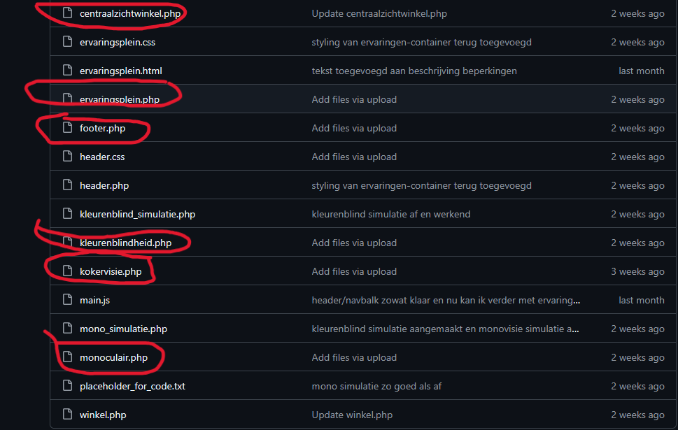
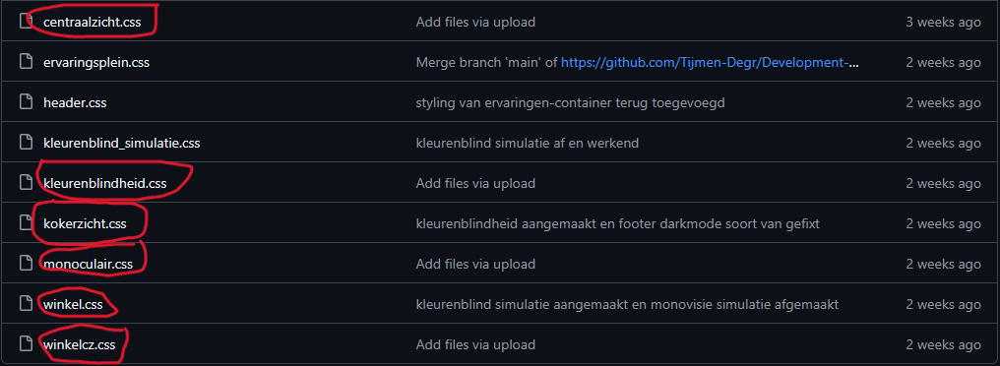
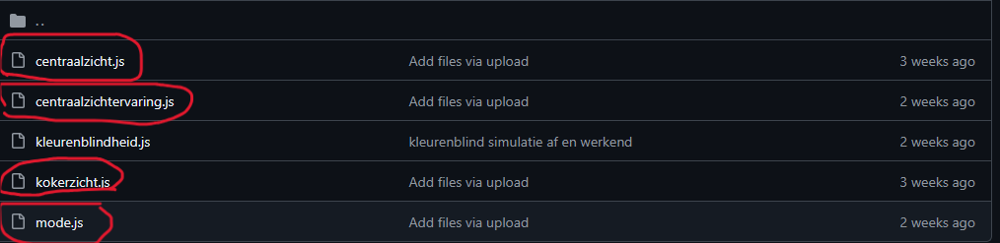

LO2 – Development & Git
In deze leeruitkomst toon ik aan dat ik digitale producten kan ontwikkelen volgens webstandaarden, met behulp van versiebeheer (Git). Ik laat zien hoe ik zelfstandig en gestructureerd werk aan mijn producten, en hoe ik samenwerk met anderen via GitHub.
🔗 Bewijsmateriaal
-
🧰 Portfolio GitHub Repository
De repository van mijn portfolio-website. Hierin staat de volledige broncode van mijn persoonlijke portfolio, inclusief onderdelen van Project X.
-
🧰 Development Project Repository
Dit is de gezamenlijke GitHub-repository van het Developmentproject. Hierin is mijn bijdrage aan de simulaties terug te vinden, inclusief commitgeschiedenis en codeversies.
-
🧰 Development Project Pagina
Toont mijn uiteindelijke technische uitwerking van het ervaringsplein en de vier simulaties in de browser, inclusief styling en logica.
🧪 Werkwijze
Voor mijn projecten gebruik ik GitHub in combinatie met Visual Studio Code. Ik werk met branches voor nieuwe features en commit regelmatig met duidelijke beschrijvingen. Tijdens het samenwerken met anderen zorg ik voor pull requests, controle op merge conflicts en gebruik van GitHub Issues om taken bij te houden. Ook documenteer ik mijn code en gebruik ik `.gitignore` en een overzichtelijke mapstructuur.
📌 Reflectie
In dit semester heb ik geleerd hoe belangrijk het is om op een gestructureerde manier aan code te werken. Door gebruik te maken van Git en GitHub kon ik niet alleen overzicht houden over mijn eigen werk, maar ook effectief samenwerken met mijn projectpartner.
Vooral in het Developmentproject werkte dit goed: we gebruikten GitHub Issues om taken te verdelen, committen onze voortgang met duidelijke berichten en konden terugvallen op oudere versies als iets mis ging. Ik merk dat ik nu veel zelfverzekerder ben in het gebruik van Git en dat ik het als essentieel onderdeel zie van het ontwikkelproces.
🧩 Mijn Bijdrage aan het Development Project
Hieronder zie je voorbeelden van mijn directe bijdrage aan het developmentproject. Dit toont aan hoe ik de simulaties heb gebouwd en Git heb ingezet voor versiebeheer.

Commitgeschiedenis waarin mijn bijdragen zichtbaar zijn, met duidelijke en gestructureerde berichten.

Voorbeeld van HTML/PHP code die ik heb opgezet voor het ervaringsplein.

Stuk CSS waarin ik zorg voor styling, toegankelijkheid en responsiviteit.

Functionele JavaScript-code voor simulatie-interactie, feedback en gebruikservaring.